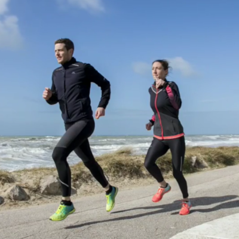

Victoria et Vincent nous proposent de les accompagner 3 fois par semaine pour 45 minutes de circuit training qui a lieu depuis leur salon lillois. Au programme : cardio, proprioception, renforcement du haut et du bas du corps, le tout en musique et avec le sourire. Tous connectés en vidéo, c'est encore plus sympa pour partager ce moment. Que vous soyez ou pas en activité, les séances ont lieu à 12h15, histoire qu'un max de monde puisse en profiter et n'hésitez pas à inviter vos enfants et ados, ils vous impressionneront certainement par leurs talents sportifs.
Pour participer, il suffit d'envoyer votre demande à Vincent qui s'occupera de vous envoyer l'invitation visio.
> Demander à participer
Victoria et Vincent ne sont pas profs de sport, ils ont juste envie de partager un moment sympa avec nous de façon totalement bénévole. Pour les remercier si nous le souhaitons, il est possible de participer à une cagnotte mise en place pour aider....